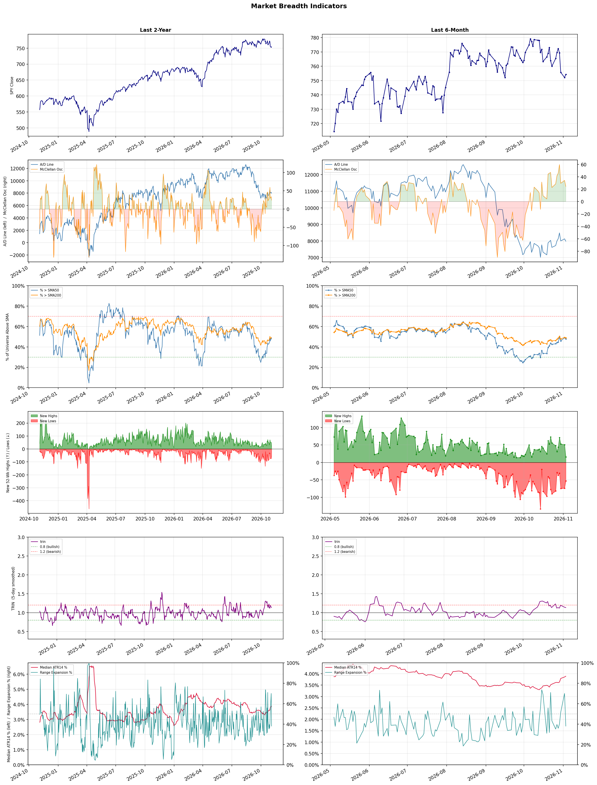

A daily market breadth and sector rotation report for active investors
| Item | Read |
|---|---|
| Regime | Neutral |
| Risk posture | Defensive |
| Universe | 1,314 stocks tracked · 16 new 52-week highs · 30 active swing setups |
| Breadth | only 47.8% of tracked stocks are above SMA50, new lows exceed new highs (53 vs 16) |
| Leadership | REIT - Hotel & Motel, Health Information Services, and Discount Stores |
| Weakest groups | Uranium, Other Industrial Metals & Mining, and Electrical Equipment & Parts |
Use this report to prioritize research and chart review; validate entries, stops, liquidity, earnings, and risk before acting.
| Item | Read |
|---|---|
| Primary read | Neutral regime with Defensive risk posture. |
| Research queue | PEB, DRH, APLE, INN, HST |
| Leadership focus | REIT - Hotel & Motel, Health Information Services, and Discount Stores |
| Caution list | Uranium, Other Industrial Metals & Mining, and Electrical Equipment & Parts |
| Review prompt | Check extension risk, chart location, fundamentals, valuation, and earnings before using any research row. |
| Item | Read |
|---|---|
| Primary read | 2 active risk warnings; use screen output as watchlist input only. |
| Bullish screens | VSXY, CROX, DD, REPL, SDGR |
| Bearish screens | MPT, IONS, STNE, FRMI |
| Alerts / levels | Automated trigger, stop, ATR, liquidity, reward/risk, and event-risk levels are pending future enrichment. |
| Review prompt | Open the linked chart, define trigger and invalidation, then check liquidity and event risk independently. |
Risk Posture: Defensive — screen backdrop favors caution; require independent risk review before new exposure
Metric context: McClellan below -50 = elevated selling pressure; below -100 = washout territory. Range Expansion = share of stocks with daily range above their 20-day average. Signal Density = share of tracked names appearing in signal screens.
| Breadth Date | % > SMA50 | % > SMA200 | New Highs | New Lows | McClellan | Median Range | Avg Range | Median ATR14 | Range Expansion | Signal Density |
|---|---|---|---|---|---|---|---|---|---|---|
| 2026-11-03 | 47.8% | 48.9% | 16 | 53 | 24.4 | 3.2% | 3.9% | 3.9% | 38.0% | 4.5% |

Prior comparison date: November 2, 2026
| Metric | Prior | Current | Change |
|---|---|---|---|
| Regime | Neutral | Neutral | unchanged |
| Risk Posture | Cautious | Defensive | changed |
| % > SMA50 | 48.9% | 47.8% | -1.2 pts |
| % > SMA200 | 49.3% | 48.9% | -0.5 pts |
| New Highs | 51 | 16 | -35 |
| New Lows | 73 | 53 | +20 |
Top-10 industries entering: none. Top-10 industries leaving: none. New multi-signal long setups: DD, MPC, S, VSXY. New multi-signal short setups: FRMI, IONS, MPT, STNE.
| Status | Tickers | Read |
|---|---|---|
| Added | ACHC, ACM, AEE, AEP, ALKS, AMC, AZTA, BLMN | New technical screen matches vs prior report. |
| Removed | AER, AJG, AMCR, AMH, BALL, BJ, BTDR, CB | No longer present in today's technical screen matches. |
| Still Active | CROX, D, IBN, REPL, SDGR | Appeared in both current and prior reports. |
| Promoted | none | Model Screen Score improved by at least 15 points. |
| Downgraded | D | Model Screen Score declined by at least 15 points. |
| Direction | Industry | ETF | Prior Rank | Current Rank | Days | Rank Change |
|---|---|---|---|---|---|---|
| Rose | Restaurants | N/A | 81 | 9 | 42 | +72 |
| Rose | Footwear & Accessories | N/A | 84 | 15 | 42 | +69 |
| Rose | Apparel Manufacturing | N/A | 73 | 4 | 42 | +69 |
| Rose | Leisure | N/A | 85 | 24 | 42 | +61 |
| Rose | REIT - Hotel & Motel | XLRE | 60 | 1 | 42 | +59 |
Bull: The restaurant sector is experiencing a rising relative strength due to the overall resilience of consumer spending in the face of economic challenges, as highlighted by Wall Street's identification of opportunities despite recent stock tumbles. Notably, analysts are optimistic about specific companies like Darden Restaurants, which is showing signs of outperforming the broader consumer discretionary sector, indicating strong fundamentals and effective management strategies. Additionally, the mention of the best restaurant ETFs for 2026 suggests a long-term bullish outlook, as investors seek to capitalize on recovery trends and potential growth in dining traffic as economic conditions stabilize.
Bear: While the bull thesis highlights resilience in consumer spending, it's essential to consider that recent headlines indicate a troubling trend of declining dining traffic, particularly in August, which could signal a broader slowdown in consumer behavior as inflationary pressures persist. Additionally, the sector's volatility, exemplified by significant drops in stocks like Cheesecake Factory, raises concerns about the sustainability of growth and profitability in an environment where discretionary spending may be curtailed. Therefore, the optimism surrounding specific companies like Darden may overlook the potential for a broader downturn in the restaurant industry as economic uncertainties loom.
Verdict: The restaurant industry's rising relative strength is primarily driven by resilient consumer spending and effective management strategies among key players like Darden Restaurants, suggesting a recovery trend in dining traffic as economic conditions stabilize. However, the key risk lies in the recent decline in dining traffic and ongoing inflationary pressures, which could indicate a broader slowdown in consumer behavior, potentially undermining the sector's growth and profitability. Investors should remain cautious and monitor economic indicators closely to assess the sustainability of this upward momentum.
Sources: Google News
Bull: The Footwear & Accessories sector is experiencing rising relative strength primarily due to increasing investor interest in sustainable practices, as highlighted by the new EU regulations aimed at preventing the destruction of unsold apparel and shoes. This regulatory shift not only encourages companies to adopt more sustainable business models but also aligns with growing consumer demand for environmentally responsible products, positioning the sector favorably in the market. Additionally, the positive outlook from analysts, as seen in multiple articles discussing top shoe stocks for 2026, suggests strong growth potential driven by innovation and consumer trends.
Bear: While the rising relative strength in the Footwear & Accessories sector may seem promising, the new EU regulations could impose significant operational challenges and costs for companies struggling to adapt their supply chains and inventory management practices. Furthermore, the emphasis on sustainability may alienate price-sensitive consumers, especially in a potential economic downturn, leading to decreased sales and profitability. Lastly, the optimistic projections from analysts may overlook the competitive landscape, where numerous brands are vying for market share, potentially leading to market saturation and diminished returns.
Verdict: The Footwear & Accessories sector's rising strength is fundamentally driven by increasing investor interest in sustainability, propelled by new EU regulations that encourage responsible practices and align with consumer demand for eco-friendly products. However, a key risk lies in the operational challenges and costs associated with adapting to these regulations, which could negatively impact profitability, especially if economic conditions lead to price-sensitive consumer behavior. Companies should focus on enhancing supply chain efficiency and exploring innovative, cost-effective sustainable practices to mitigate these risks.
Sources: Google News
Bull: The Apparel Manufacturing sector is experiencing a rising relative strength primarily due to robust consumer demand and a resurgence in fashion trends, as highlighted in articles like "7 Best Apparel Stocks for 2026" and "4 Textile-Apparel Stocks to Watch as Industry Trends Strengthen." Additionally, the positive sentiment surrounding specific stocks, such as the comparison between VNCE and RL, indicates a growing investor confidence in the industry's recovery and potential for growth, driven by evolving consumer preferences and increased spending in the sector.
Bear: While the apparel manufacturing sector may currently exhibit rising relative strength, this trend could be misleading as it often reflects short-term consumer spending driven by temporary fashion fads rather than sustainable growth. Additionally, persistent supply chain disruptions, inflationary pressures on raw materials, and changing consumer behaviors towards sustainability and thriftiness could undermine long-term profitability and lead to a potential downturn in demand, making the current optimism overly optimistic.
Verdict: The apparel manufacturing sector's rising relative strength is fundamentally driven by robust consumer demand and a resurgence in fashion trends, fueled by increased spending and evolving preferences. However, the key risk lies in the potential for short-lived demand driven by temporary fads, coupled with ongoing supply chain disruptions and inflationary pressures, which could undermine long-term profitability and lead to a downturn in the industry. Investors should remain cautious and monitor these external factors closely to assess the sustainability of this growth trend.
Sources: Google News
Bull: The Leisure sector is experiencing a rise in relative strength due to a robust recovery in travel and tourism, driven by pent-up consumer demand as pandemic restrictions ease. Recent headlines highlight growth opportunities in leisure stocks despite industry pressures, suggesting that investors are increasingly optimistic about the sector's resilience and potential for profitability, particularly as travel and recreation become more accessible and appealing for consumers heading into 2026. Additionally, the focus on consumer discretionary spending indicates a broader economic recovery, further supporting the bullish outlook for leisure-related investments.
Bear: While the leisure sector may currently exhibit rising relative strength, this optimism could be misleading given the broader economic uncertainties, including potential recession risks, inflationary pressures, and rising interest rates that could dampen consumer discretionary spending. Additionally, the industry's recovery is heavily reliant on pent-up demand, which may not be sustainable as consumers reassess their spending habits in a changing economic landscape, potentially leading to a slowdown in growth for leisure stocks as we approach 2026.
Verdict: The leisure sector's rise in relative strength is fundamentally driven by a strong recovery in travel and tourism, fueled by pent-up consumer demand as pandemic restrictions ease, which has led to increased consumer discretionary spending. However, investors should remain cautious of the key risk posed by broader economic uncertainties, including potential recession, inflation, and rising interest rates, which could curtail consumer spending and dampen the sector's growth trajectory as we approach 2026.
Sources: Google News
Bull: The REIT - Hotel & Motel sector is experiencing rising relative strength primarily due to a robust recovery in travel demand and positive earnings expectations, as indicated by headlines highlighting potential upside for hotel REITs this earnings season and the focus on quality portfolios, such as Xenia Hotels (XHR). Additionally, the seasonal returns chart suggests that this industry typically benefits from increased travel and tourism, further supported by broader trends of real estate stocks outperforming, as noted by Morningstar, which reflects investor confidence in the hospitality sector's resilience and growth potential.
Bear: While the recent headlines suggest optimism in the hotel REIT sector due to rising travel demand and positive earnings expectations, a closer look reveals significant headwinds that could undermine this bullish outlook. Rising interest rates and inflationary pressures are likely to increase borrowing costs and operational expenses for hotel operators, potentially squeezing margins and dampening profitability. Additionally, the potential for an economic slowdown or recession could lead to decreased discretionary spending on travel, which would adversely impact occupancy rates and revenue for hotel REITs, contradicting the narrative of sustained growth and resilience.
Verdict: The REIT - Hotel & Motel sector is likely experiencing rising relative strength due to a strong rebound in travel demand and positive earnings projections, particularly for quality portfolios like Xenia Hotels (XHR). However, investors should remain cautious of the key risk posed by rising interest rates and inflation, which could increase operational costs and dampen profitability, especially if economic conditions lead to reduced discretionary spending on travel.
Sources: Google News
| Direction | Industry | ETF | Prior Rank | Current Rank | Days | Rank Change |
|---|---|---|---|---|---|---|
| Fell | Semiconductor Equipment & Materials | SOXX | 4 | 84 | 35 | -80 |
| Fell | Computer Hardware | XLK | 3 | 82 | 35 | -79 |
| Fell | Copper | COPX | 9 | 79 | 35 | -70 |
| Fell | Semiconductors | SOXX | 6 | 76 | 28 | -70 |
| Fell | Electronic Components | XLK | 4 | 74 | 28 | -70 |
Bear: While profit-taking may explain some of the recent declines, the broader context reveals deeper issues within the semiconductor equipment and materials sector. The persistent uncertainty in chip equipment demand, as highlighted by the significant drop in Applied Materials' shares, suggests that investors are not merely reacting to short-term profit-taking but are increasingly concerned about a potential downturn in the semiconductor cycle, exacerbated by macroeconomic pressures and geopolitical tensions that could hinder growth in this critical industry. This indicates that the sector's relative strength trend may not just be a temporary blip but rather a signal of more fundamental weaknesses ahead.
Bull: The recent decline in the relative strength of the Semiconductor Equipment & Materials sector is primarily driven by profit-taking after a significant rally, as indicated by headlines noting that investors are cashing in on gains from a strong year. Additionally, uncertainty in the chip equipment outlook, particularly highlighted by the drop in Applied Materials' shares, suggests concerns about future demand and market conditions, which could be impacting investor sentiment across the sector.
Verdict: The recent decline in the Semiconductor Equipment & Materials sector appears to be driven by a combination of profit-taking after a strong rally and growing concerns about future demand, particularly highlighted by the drop in Applied Materials' shares. The key risk from the bear case is the potential for a prolonged downturn in the semiconductor cycle, exacerbated by macroeconomic pressures and geopolitical tensions, which could signal deeper structural weaknesses in the industry. Investors should closely monitor demand indicators and geopolitical developments to assess the sustainability of any recovery in this sector.
Sources: Google News
Bear: While the bull analyst attributes the decline in relative strength to a market shift away from AI hardware stocks, it's crucial to recognize that this sentiment may reflect broader economic concerns, such as rising interest rates and inflation, which can dampen overall tech spending. Furthermore, the pivot towards emerging technologies like quantum computing could indicate a fundamental shift in investor priorities, suggesting that traditional hardware stocks may struggle to regain traction as capital flows toward more innovative and potentially disruptive sectors. This shift could lead to prolonged underperformance in the Computer Hardware sector, as investors reassess the long-term viability of established players amidst evolving technological landscapes.
Bull: The recent decline in the relative strength of the Computer Hardware sector can be attributed to a market shift away from AI hardware stocks, as highlighted by Business Insider's CIO advocating for investments in alternative sectors. Additionally, the trend of hedge funds dumping chip stocks for four consecutive weeks, as reported by Reuters, suggests a growing caution among institutional investors regarding the sustainability of demand in the hardware space, especially amid rising interest in emerging technologies like quantum computing, as noted by The Motley Fool. This pivot in investor sentiment is likely driving the sector's underperformance relative to others.
Verdict: The Computer Hardware sector's decline is primarily driven by a market shift away from traditional AI hardware stocks, compounded by broader economic concerns such as rising interest rates and inflation, which are likely to suppress tech spending. Investors are increasingly reallocating capital towards emerging technologies like quantum computing, posing a key risk that established hardware companies may struggle to maintain relevance and growth in this evolving landscape. To navigate this trend, investors should consider diversifying their portfolios to include innovative tech sectors while closely monitoring the financial health and adaptability of traditional hardware firms.
Sources: Google News
Bear: While the bull analyst emphasizes the potential for recovery in copper stocks, the recent volatility and significant declines in major players like Freeport-McMoRan and Teck Resources indicate a deeper issue within the sector. The uncertainty surrounding tariffs not only undermines investor confidence but also raises concerns about future demand, particularly if global economic growth slows or if alternative materials gain traction. Furthermore, the relative strength trend of copper is falling, suggesting that bullish sentiment may be overly optimistic given the current headwinds facing the industry.
Bull: Copper's recent decline in relative strength can be attributed to rising concerns over tariffs, as indicated by the headline "Copper Stocks Tumble as Tariff Doubt Reverses Record Rally," which suggests that uncertainty surrounding trade policies is negatively impacting investor sentiment. Additionally, the broader mining sector is experiencing volatility, as seen in the reports of significant drops in major copper stocks like Freeport-McMoRan and Teck Resources, further contributing to the overall bearish outlook for copper in the short term. However, the potential for recovery remains strong, especially with UBS highlighting top copper stocks and forecasts of copper driving growth in Australia's mining sector.
Verdict: The recent decline in copper prices is primarily driven by heightened concerns over tariffs and trade policies, which are undermining investor confidence and creating volatility in the sector. This bearish sentiment is compounded by the risk of slowing global economic growth, potentially diminishing demand for copper and allowing alternative materials to gain market share. Investors should closely monitor developments in trade negotiations and global economic indicators, as these factors will significantly influence copper's recovery potential.
Sources: Google News
Bear: While the argument for buying semiconductor stocks based on their current valuations relative to the S&P 500 may seem appealing, it overlooks the fundamental challenges facing the industry, particularly the ongoing uncertainty surrounding AI investments and the potential for oversupply in the market. The significant losses reported by Intel indicate deeper issues within the sector, such as increased competition and rising production costs, which could continue to pressure margins and stifle growth. Additionally, the falling relative strength trend suggests that investor sentiment is shifting away from semiconductors, indicating that a recovery may not be imminent and that further declines could be on the horizon.
Bull: The recent decline in the relative strength of the semiconductor industry can be attributed to heightened concerns over AI investments, as indicated by the headline from 조선일보, which suggests that market sentiment is reacting negatively to uncertainties surrounding the future of AI technology and its impact on semiconductor demand. Additionally, Intel's significant losses, highlighted by Moomoo, reflect broader investor anxiety about the industry's growth prospects, leading to a sell-off in semiconductor stocks. However, as noted by Benzinga, the current valuation of semiconductor stocks being cheaper than the S&P 500 presents a compelling buying opportunity for investors looking to capitalize on potential recovery in the sector.
Verdict: The semiconductor industry's recent decline is primarily driven by heightened investor concerns over AI investments and the implications for future demand, exacerbated by Intel's significant losses, which highlight deeper challenges such as increased competition and rising production costs. Key risks include the potential for oversupply and ongoing uncertainty in market sentiment, suggesting that while current valuations may present a buying opportunity, a cautious approach is warranted as further declines could materialize if these fundamental issues persist. Investors should closely monitor industry developments and adjust their strategies accordingly.
Sources: Google News
Bear: While the bull analyst attributes the relative weakness in the Electronic Components sector to a shift in investor focus toward emerging technologies, this overlooks fundamental challenges facing the sector, such as supply chain disruptions and rising production costs that are likely to persist. Additionally, the strong performance of individual companies like Amphenol may not be indicative of broader sector health, as many electronic component firms are struggling with declining margins and inventory gluts, which could lead to further underperformance in the face of an uncertain economic outlook.
Bull: The relative weakness in the Electronic Components sector can be attributed to broader market dynamics, particularly the surge in beneficiary stocks like those in Taiwan's Mega 00943 ETF, which may be drawing investor attention away from traditional electronic components. Additionally, while Amphenol's strong Q2 earnings highlight individual success, the overall sector sentiment may be dampened by the focus on emerging technologies such as robotics and memory stocks, which are currently capturing market interest and investment, as noted in the headlines. This shift in focus suggests that investors may be reallocating capital toward sectors perceived as having higher growth potential, impacting the relative strength of electronic components.
Verdict: The Electronic Components sector's decline is primarily driven by persistent supply chain disruptions and rising production costs, which are eroding margins across the industry. While individual companies like Amphenol may report strong earnings, the overall sector is facing challenges from inventory gluts and a shifting investor focus toward higher-growth areas like robotics and memory stocks. Investors should be cautious, as these fundamental issues could lead to further underperformance amidst an uncertain economic outlook.
Sources: Google News
| Industry | Rank | ETF | 7d | 14d | 28d | 42d | Chg 42d | Size | 20D | 60D | Composite | Active Setups |
|---|---|---|---|---|---|---|---|---|---|---|---|---|
| REIT - Hotel & Motel | 1 | XLRE | 2 | 5 | 10 | 60 | +59 | 9 | 12.6% | 13.9% | 0.941 | 0 |
| Health Information Services | 2 | N/A | 5 | 7 | 2 | 3 | +1 | 12 | 10.5% | 29.0% | 0.935 | 1 |
| Discount Stores | 3 | XRT | 19 | 9 | 14 | 36 | +33 | 7 | 9.0% | 8.2% | 0.914 | 0 |
| Apparel Manufacturing | 4 | N/A | 7 | 10 | 27 | 73 | +69 | 6 | 22.5% | 11.1% | 0.914 | 0 |
| Insurance Brokers | 5 | N/A | 9 | 13 | 30 | 43 | +38 | 6 | 12.6% | 13.9% | 0.906 | 0 |
| Specialty Retail | 6 | XRT | 13 | 21 | 23 | 39 | +33 | 13 | 13.1% | 6.0% | 0.898 | 0 |
| Household & Personal Products | 7 | XLP | 4 | 4 | 20 | 24 | +17 | 11 | 9.7% | 10.9% | 0.896 | 0 |
| Drug Manufacturers - General | 8 | IHE | 17 | 22 | 24 | 30 | +22 | 14 | 9.7% | 6.4% | 0.877 | 0 |
| Restaurants | 9 | N/A | 27 | 19 | 57 | 81 | +72 | 16 | 15.3% | 9.7% | 0.869 | 2 |
| Beverages - Non-Alcoholic | 10 | XLP | 24 | 14 | 46 | 63 | +53 | 7 | 9.5% | 5.2% | 0.846 | 0 |
Rank columns (7d–42d) show the industry's rank that many trading days ago — lower is stronger. Chg 42d = rank change vs 42 trading days ago — positive means the industry moved up. 20D and 60D are the mean stock return within the industry over that period. Active Setups: count of today's swing-trade candidates from this industry appearing across all signal screens.
| Industry | Rank | ETF | 7d | 14d | 28d | 42d | Chg 42d | Size | 20D | 60D | Composite | Active Setups |
|---|---|---|---|---|---|---|---|---|---|---|---|---|
| Uranium | 87 | URA | 87 | 87 | 77 | 72 | -15 | 6 | -25.9% | -35.8% | 0.010 | 0 |
| Other Industrial Metals & Mining | 86 | N/A | 85 | 85 | 80 | 47 | -39 | 21 | -24.9% | -36.6% | 0.021 | 0 |
| Electrical Equipment & Parts | 85 | XLI | 86 | 86 | 58 | 38 | -47 | 12 | -18.3% | -27.5% | 0.096 | 0 |
| Semiconductor Equipment & Materials | 84 | SOXX | 76 | 68 | 5 | 13 | -71 | 17 | -25.8% | -21.0% | 0.103 | 1 |
| Auto Parts | 83 | N/A | 80 | 73 | 65 | 35 | -48 | 19 | -13.9% | -22.6% | 0.103 | 1 |
| Computer Hardware | 82 | XLK | 60 | 61 | 11 | 5 | -77 | 15 | -24.9% | -21.0% | 0.112 | 0 |
| Gold | 81 | GDX | 61 | 54 | 42 | 22 | -59 | 25 | -13.8% | -17.1% | 0.114 | 0 |
| REIT - Mortgage | 80 | N/A | 84 | 84 | 86 | 70 | -10 | 11 | -7.1% | -23.3% | 0.115 | 0 |
| Copper | 79 | COPX | 62 | 50 | 19 | 12 | -67 | 6 | -18.3% | -17.9% | 0.122 | 0 |
| Aerospace & Defense | 78 | ITA | 82 | 83 | 70 | 57 | -21 | 26 | -11.6% | -29.4% | 0.146 | 0 |
Rank columns (7d–42d) show the industry's rank that many trading days ago — lower is stronger. Chg 42d = rank change vs 42 trading days ago — positive means the industry moved up. 20D and 60D are the mean stock return within the industry over that period. Active Setups: count of today's swing-trade candidates from this industry appearing across all signal screens.
These are research candidates from top-ranked stocks, capped at five names per industry to avoid over-concentration. Returns shown (60D, 120D, 250D) are historical — they reflect where prices have already moved, not forward expectations. Extension Risk flags names that may require extra patience or a better entry point. They are not buy signals.
Chart: TV = TradingView chart (opens in browser); PDF = local chart file (if downloaded).
| Ticker | Name | Industry | Industry Rank | Market Cap | 60D Hist | 120D Hist | 250D Hist | Extension Risk | Research Reason | Chart |
|---|---|---|---|---|---|---|---|---|---|---|
| PEB | Pebblebrook Hotel Trust | REIT - Hotel & Motel | 1 | N/A | 23.9% | 53.7% | 114.1% | Constructive | Top-ranked in industry | TV |
| DRH | DIAMONDROCK HOSPITALITY CO | REIT - Hotel & Motel | 1 | N/A | 20.8% | 41.0% | 88.2% | Constructive | Top-ranked in industry | TV |
| APLE | Apple Hospitality REIT Inc | REIT - Hotel & Motel | 1 | N/A | 20.4% | 39.2% | 78.8% | Constructive | Top-ranked in industry | TV |
| INN | Summit Hotel Properties Inc | REIT - Hotel & Motel | 1 | N/A | 14.9% | 35.9% | 45.5% | Constructive | Top-ranked in industry | TV |
| HST | Host Hotels & Resorts | REIT - Hotel & Motel | 1 | N/A | 14.7% | 25.3% | 73.4% | Constructive | Top-ranked in industry | TV |
| CERT | Certara | Health Information Services | 2 | N/A | 34.7% | 126.9% | -5.9% | Extended | Top-ranked in industry; extended | TV |
| HNGE | Hinge Health | Health Information Services | 2 | N/A | 27.6% | 116.1% | 118.6% | Extended | Top-ranked in industry; extended | TV |
| DOCS | Doximity | Health Information Services | 2 | N/A | 27.2% | 39.4% | -50.5% | Constructive | Top-ranked in industry | TV |
| TDOC | Teladoc Health | Health Information Services | 2 | N/A | 25.6% | 30.9% | 11.4% | Constructive | Top-ranked in industry | TV |
| BTSG | BrightSpring Health Services | Health Information Services | 2 | N/A | 13.7% | 23.6% | 118.0% | Constructive | Top-ranked in industry | TV |
| BJ | BJ's Wholesale Club Holdings | Discount Stores | 3 | N/A | 13.8% | 15.2% | 21.4% | Constructive | Top-ranked in industry | TV |
| WMT | Walmart | Discount Stores | 3 | N/A | 11.1% | -4.8% | 23.1% | Constructive | Top-ranked in industry | TV |
| DG | Dollar General | Discount Stores | 3 | N/A | 7.1% | 29.6% | 33.3% | Constructive | Top-ranked in industry | TV |
| COST | Costco | Discount Stores | 3 | N/A | 7.1% | -1.0% | 9.0% | Constructive | Top-ranked in industry | TV |
| DLTR | Dollar Tree | Discount Stores | 3 | N/A | 3.6% | 54.5% | 31.4% | Constructive | Top-ranked in industry | TV |
| FIGS | FIGS Inc | Apparel Manufacturing | 4 | N/A | 44.7% | 70.5% | 182.1% | Constructive | Top-ranked in industry | TV |
| VFC | VF Corp | Apparel Manufacturing | 4 | N/A | 35.4% | 18.4% | 49.0% | Constructive | Top-ranked in industry | TV |
| PVH | PVH Corp | Apparel Manufacturing | 4 | N/A | 4.6% | 13.6% | 21.7% | Constructive | Top-ranked in industry | TV |
| LEVI | Levi Strauss & Co. | Apparel Manufacturing | 4 | N/A | -2.4% | 8.6% | 20.7% | Lagging | Top-ranked in industry; lagging | TV |
| ZGN | Ermenegildo Zegna NV | Apparel Manufacturing | 4 | N/A | -6.0% | 10.6% | 42.8% | Lagging | Top-ranked in industry; lagging | TV |
These are technical screen matches from existing signal files. They are not trade recommendations. Trigger, stop, ATR, liquidity, reward/risk, and event risk still require separate validation until those inputs are available.
Model Screen Score is weighted by signal count, industry rank, freshness, and setup type. It is not a probability of profit, expected return, or suitability rating. Industry cap: max 3 candidates per industry.
Signal glossary: Momentum Pullback = stock in an uptrend that has pulled back 10–30% and shows re-entry conditions. MA Compression = short- and long-term moving averages converging, often preceding a directional move. Three-Day Up/Down = three consecutive closes in the same direction. New 52Wk High/Low = price reached a new annual extreme.
Chart: TV = TradingView chart (opens in browser); PDF = local chart file (if downloaded).
| Ticker | Industry | Setups | Close | Industry Rank | Signal Count | Model Screen Score | Reason | Chart |
|---|---|---|---|---|---|---|---|---|
| VSXY | Apparel Retail | New 52Wk High; Three-Day Up | 100.53 | 13 | 2 | 85 | Multi-signal; new-high strength | TV |
| CROX | Footwear & Accessories | New 52Wk High; Three-Day Up | 153.61 | 15 | 2 | 85 | Multi-signal; new-high strength | TV |
| DD | Specialty Chemicals | New 52Wk High; Three-Day Up | 153.46 | 45 | 2 | 65 | Multi-signal; new-high strength | TV |
| REPL | Biotechnology | New 52Wk High; Three-Day Up | 20.65 | 51 | 2 | 65 | Multi-signal; new-high strength | TV |
| IBN | Banks - Regional | MA Compression; Three-Day Up | 30.13 | 54 | 2 | 60 | Multi-signal; compression setup | TV |
| MPC | Oil & Gas Refining & Marketing | Momentum Pullback | 427.34 | 41 | 2 | 50 | Multi-signal; pullback setup | TV |
| S | Software - Infrastructure | Momentum Pullback | 23.11 | 53 | 2 | 50 | Multi-signal; pullback setup | TV |
| SDGR | Health Information Services | Momentum Pullback | 27.18 | 2 | 1 | 65 | Single-signal; top industry pullback | TV |
| BLMN | Restaurants | Momentum Pullback | 10.23 | 9 | 1 | 50 | Single-signal; top industry pullback | TV |
| ACHC | Medical Care Facilities | Momentum Pullback | 29.62 | 11 | 1 | 50 | Single-signal; pullback setup | TV |
| UA | Apparel Manufacturing | Three-Day Up | 5.14 | 4 | 1 | 48 | Single-signal; top industry setup | TV |
| VFC | Apparel Manufacturing | Three-Day Up | 20.04 | 4 | 1 | 48 | Single-signal; top industry setup | TV |
| QSR | Restaurants | MA Compression | 74.31 | 9 | 1 | 45 | Single-signal; top industry setup | TV |
| ALKS | Drug Manufacturers - Specialty & Generic | Momentum Pullback | 45.69 | 16 | 1 | 42 | Single-signal; pullback setup | TV |
| FWRG | Restaurants | Three-Day Up | 13.63 | 9 | 1 | 40 | Single-signal; top industry setup | TV |
| AEE | Utilities - Regulated Electric | MA Compression | 110.37 | 23 | 1 | 37 | Single-signal; compression setup | TV |
| AEP | Utilities - Regulated Electric | MA Compression | 129.86 | 23 | 1 | 37 | Single-signal; compression setup | TV |
| D | Utilities - Regulated Electric | MA Compression | 66.78 | 23 | 1 | 37 | Single-signal; compression setup | TV |
| AZTA | Medical Instruments & Supplies | Momentum Pullback | 37.14 | 26 | 1 | 35 | Single-signal; pullback setup | TV |
| VSTS | Rental & Leasing Services | Momentum Pullback | 14.59 | 30 | 1 | 35 | Single-signal; pullback setup | TV |
| CRON | Drug Manufacturers - Specialty & Generic | Three-Day Up | 3.38 | 16 | 1 | 32 | Single-signal; upside pattern | TV |
| ELAN | Drug Manufacturers - Specialty & Generic | Three-Day Up | 24.57 | 16 | 1 | 32 | Single-signal; upside pattern | TV |
| AMC | Entertainment | Three-Day Up | 3.28 | 21 | 1 | 32 | Single-signal; upside pattern | TV |
| DIS | Entertainment | Three-Day Up | 114.18 | 21 | 1 | 32 | Single-signal; upside pattern | TV |
| SIRI | Entertainment | Three-Day Up | 30.80 | 21 | 1 | 32 | Single-signal; upside pattern | TV |
| ACM | Engineering & Construction | Three-Day Up | 66.25 | 22 | 1 | 32 | Single-signal; upside pattern | TV |
Bearish setups — stocks making new lows or showing persistent downside patterns. Validate carefully before acting.
| Ticker | Industry | Setups | Close | Industry Rank | Signal Count | Model Screen Score | Reason | Chart |
|---|---|---|---|---|---|---|---|---|
| MPT | REIT - Healthcare Facilities | New 52Wk Low; Three-Day Down | 2.02 | 47 | 2 | 35 | Multi-signal; new-low weakness | TV |
| IONS | Biotechnology | New 52Wk Low; Three-Day Down | 40.42 | 51 | 2 | 35 | Multi-signal; new-low weakness | TV |
| STNE | Software - Infrastructure | New 52Wk Low; Three-Day Down | 7.39 | 53 | 2 | 35 | Multi-signal; new-low weakness | TV |
| FRMI | REIT - Specialty | New 52Wk Low; Three-Day Down | 2.04 | 56 | 2 | 35 | Multi-signal; new-low weakness | TV |
How To Use This Report
| Use | Purpose |
|---|---|
| Market map | Start with breadth, regime, risk warnings, and what changed since the prior report. |
| Industry scan | Use leading, deteriorating, rising, and declining industries to focus research. |
| Research queue | Treat long-term candidates as names for deeper fundamental, valuation, and chart review. |
| Technical review | Treat bullish and bearish screen matches as watchlist inputs that require independent trigger, stop, liquidity, and event-risk checks. |
| Source follow-up | Use chart links and source files to verify raw inputs before relying on any row. |
What This Report Is Not
| Not | Meaning |
|---|---|
| Investment advice | The report does not evaluate personal objectives, risk tolerance, tax situation, account type, or suitability. |
| Buy/sell recommendation | Named tickers are research candidates or screen matches, not recommendations to transact. |
| Price target | The report does not provide fair value estimates, targets, or expected returns. |
| Trade plan | Trigger, stop, sizing, reward/risk, liquidity, and event-risk review remain separate user work. |
| Performance claim | Model Screen Score is not validated historical performance or a forecast of future results. |
| Item | Note |
|---|---|
| Version | Daily Report Methodology v1 |
| Model Screen Score | Screen-fit rank based on signal count, industry rank, freshness, and setup type. |
| Not predictive proof | The score is not expected return, probability of profit, historical validation, or suitability analysis. |
| Industry ranks | Composite industry ranks use existing daily ranking outputs and historical rank columns when available. |
| Research candidates | Long-term rows are research candidates from ranked stocks and leading industries, with historical returns labeled as historical only. |
| Technical matches | Bullish and bearish rows are screen matches requiring independent chart, trigger, stop, liquidity, and event-risk review. |
| Source | Status | Rows | Path |
|---|---|---|---|
| Market breadth | present | 1253 | breadth_20261103.csv |
| Industry composite rankings | present | 87 | all_industry_composite_20261103.csv |
| Top ranked stocks | present | 101 | top_ranked_composite_20261103.csv |
| All ranked stocks | present | 1314 | all_stocks_composite_sorted_20261103.csv |
| Top momentum pullbacks | present | 1466 | top_momentum_pullbacks_20261103.csv |
| MA compression | present | 1466 | ma_compression_stocks_20261103.csv |
| Three-day up/down | present | 108 | three_day_up_down_stocks_20261103.csv |
| New 52-week members | present | 69 | breadth_new_52wk_members_20261103.csv |
This report is generated from automated technical screens and is for informational and research purposes only. It is not investment advice, a solicitation, or a recommendation to buy or sell any security. Past performance is not indicative of future results. You are solely responsible for your own investment decisions. Consult a licensed financial advisor before acting on any information herein.